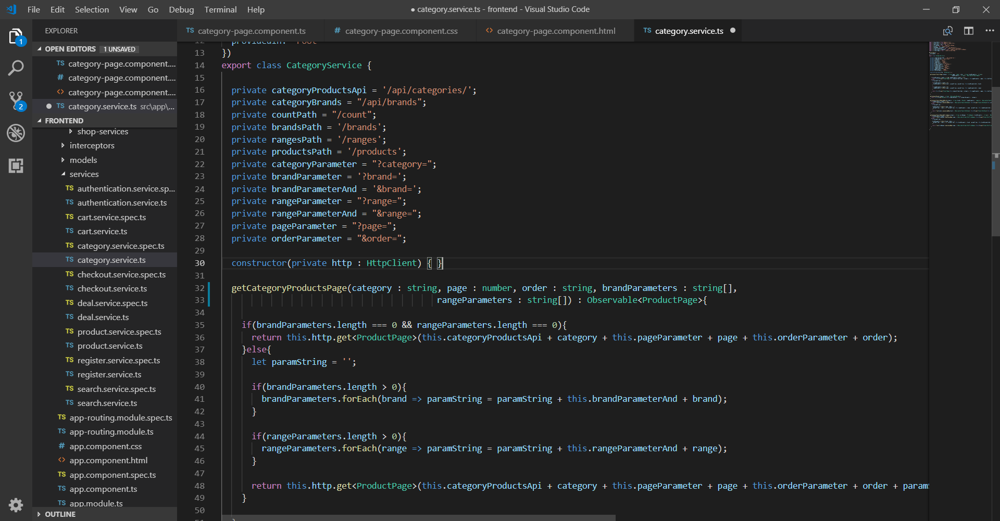

Angular - category
Θα δημιουργήσουμε το category-page component, το οποίο περιέχει τα προϊόντα της κάθε κατηγορίας. Όταν ο client θέλει τα προϊόντα της κατηγορίας Vitamins, κάνει ένα HTTP GET request στο url http://localhost:8080/api/categories/vitamins?page=0&order=asc και το Spring Boot θα του επιστρέφει την αντίστοιχη εξάδα προϊόντων.
Spring Boot
Δημιουργούμε τoν CategoryApiController στο πακέτο springeshop.controller
package springeshop.controller;
@RestController
@RequestMapping("/api")
public class CategoryApiController{
public static final Logger logger = LoggerFactory.getLogger(CategoryApiController.class);
@Autowired
private BrandService brandService;
@Autowired
private ProductService productService;
@Autowired
private CategoryService categoryService;
@Autowired
private InventoryService inventoryService;
@Autowired
private ProductImageService productImageService;
...
Προσθέτουμε την ακόλουθη μέθοδο στο ProductRepository. Θα επιστρέφει ένα Page<Product>(6 προϊόντα) της κατηγορίας, πραγματοποιώντας το ερώτημα JPQL "Select prod from Product prod where prod.category.id = :id".
package springeshop.repositories;
@Repository
public interface ProductRepository extends JpaRepository<Product, Integer> {
....
Page<Product> findByCategoryId(int id, Pageable pageable);
}
Προσθέτουμε την μέθοδο στο ProductService και ProductServiceImpl.
package springeshop.service;
public interface ProductService{
...
Page<Product> findByCategoryId(int id, Pageable pageable);
}
package springeshop.service;
@Service("productService")
@Transactional
public class ProductServiceImpl implements ProductService{
@Autowired
private ProductRepository productRepository;
...
@Override
public Page<Product> findByCategoryId(int id, Pageable pageable){
return productRepository.findByCategoryId(id, pageable);
}
}
Προσθέτουμε τη μέθοδο στον CategoryApiController. Εάν δεν υπάρχει κατηγορία με αυτό το όνομα, επιστρέφουμε status 404 NOT FOUND.
@RequestMapping(value = "/categories/{name}", method = RequestMethod.GET)
public ResponseEntity<?> getCategoryProducts(@PathVariable((@value = "name") String name,
@RequestParam( (@value = "page", required = true) int page,
@RequestParam((@value = "order", required = true) String order){
Page<Product> products;
Direction sortDirection = order.equals("asc") ? Sort.Direction.ASC : Sort.Direction.DESC;
Category category = categoryService.findByName(getCorrectCategoryName(name));
if(category == null){
logger.error("Category with name {} not found.", name);
return new ResponseEntity<>(new ErrorMessage("Category with name " + name + " not found"), HttpStatus.NOT_FOUND);
}
Εάν η λίστα τον προϊόντων είναι κενή, επιστρέφουμε status 204 NO CONTENT, αλλιώς προσθέτουμε τις εικόνες και την ποσότητα και επιστρέφουμε την λίστα με status 200.
products = productService.findByCategoryId(category.getId(), PageRequest.of(page, 6, sortDirection, "price"));
addImagesAndQuantityToProducts(products.getContent());
if(!products.hasContent()){
logger.error("No products found.");
return new ResponseEntity<>(HttpStatus.NO_CONTENT);
}
return new ResponseEntity<>(products, HttpStatus.OK);
}
Παράδειγμα αιτήματος με Postman

category-page component
Δημιουργούμε το component category-page και το τοποθετούμε στο φάκελο components. Το όνομα της κατηγορίας το παιρνάμε χρησιμοποιώντας ένα routerLink, το οποίο λέει στην Angular, να αλλάξει route.
<a class="nav-link" routerLink="/category/{{category.englishName}}">{{category.greekName}}</p></a>
ng generate component category-page
Θα χρησιμοποιήσουμε τη μέθοδο getCategoryProductsPage() του ProductService, για να πραγματοποιήσουμε το HTTP αίτημα και να πάρουμε το προϊόντα.
Κάθε φορά που αλλάζει ο χρήστης κατηγορία, παίρνουμε το όνομα της κατηγορίας από το route και πραγματοποιούμε το HTTP αίτημα, για να πάρουμε τα προϊόντα.
category-page.component.ts

category-page.component.html
Εισάγουμε τα template <navigation-bar> και μετά εμφανίζουμε τον τίτλο της κατηγορίας. Μετά, στην αριστερή στήλη τοθετούμε το template <category-sidebar> του CategorySidebarComponent, το οποίο θα δημιουργήσουμε μετά και στην δεξιά <product-item> templates, για να εμφανίσουμε τα προϊόντα. Τέλος, εισάγουμε τα template <my-footer>

category-page.component.css

Τελική εμφάνιση σελίδας